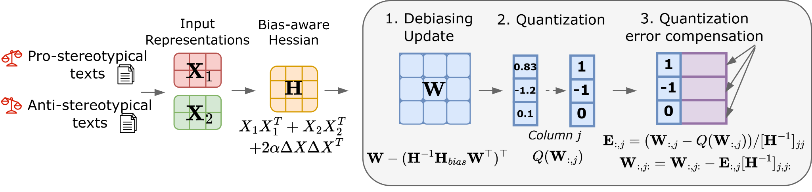

Fair-GPTQ
Bias-Aware Quantization for Large Language Models
Abstract
The high memory demands of generative language models have drawn attention to quantization, which reduces memory usage by mapping model weights to lower-precision integers. However, recent empirical studies show that, while efficient, quantization can increase the likelihood of generating biased outputs and degrade performance on fairness benchmarks. In this work, we draw new links between quantization and model fairness by adding explicit group-fairness constraints to the quantization objective and introduce Fair-GPTQ, the first quantization method explicitly designed to reduce unfairness in large language models. The added constraints guide the learning of the rounding operation toward less-biased text generation for protected groups. Specifically, we focus on stereotype generation involving occupational bias and discriminatory language spanning gender, race, and religion. Fair-GPTQ has minimal impact on performance, preserving at least 90% of baseline accuracy on zero-shot benchmarks, reduces unfairness relative to a half-precision model, and retains the memory and speed benefits of 4-bit quantization.
Quantization playground
Choose a bit-width and move the weight.
Method

We introduce an explicit group-bias term into the quantization objective. Using paired calibration inputs, we construct a bias-aware Hessian that combines the reconstruction term with the contrast between demographic groups.
We first apply a debiasing weight update, then quantize each column and compensate the remaining weights for quantization error using GPTQ’s second-order procedure. In our main experiments, we apply the fairness-aware correction to attention-output and feed-forward-output projections and use standard GPTQ for the remaining projections.
Algorithm 1 · Fair-GPTQ
Experimental Results
We evaluate Fair-GPTQ at 4-bit precision against standard GPTQ on six base and instruction-tuned language models. We measure language-modeling perplexity on WikiText-2, zero-shot performance on HellaSwag, stereotype-related behavior on UnQover, Distance-to-Optimum (DTO), and decoding latency. For the comparison, we set the bias coefficient to α = 0.1 and apply the fairness-aware update to selected projection layers (output attention and FC layer).
Performance and fairness across six models
| Model | Method | WikiText-2 PPL ↓ | HellaSwag ↑ | UnQover ↑ | DTO ↓ | Latency ↓ |
|---|---|---|---|---|---|---|
| Mistral-v0.3-7B | GPTQ-INT4 | 5.65 | 60.32% | 27.61% | 0.584 | 4.57 |
| Fair-GPTQ-INT4 | 6.28 | 58.70% | 26.70% (-0.91 pp) | 0.607 | 4.57 | |
| OPT-6.7B | GPTQ-INT4 | 10.83 | 49.76% | 32.10% | 0.597 | 4.12 |
| Fair-GPTQ-INT4 | 13.21 | 46.39% | 36.27% (+4.17 pp) | 0.589 | 4.12 | |
| Qwen-3-8B | GPTQ-INT4 | 9.98 | 56.44% | 70.06% | 0.374 | 5.34 |
| Fair-GPTQ-INT4 | 10.76 | 53.93% | 77.76% (+7.70 pp) | 0.362 | 5.34 | |
| LLaMA-3.1-8B-Instruct | GPTQ-INT4 | 7.37 | 57.26% | 14.03% | 0.679 | 5.02 |
| Fair-GPTQ-INT4 | 7.38 | 56.97% | 26.66% (+12.63 pp) | 0.601 | 5.02 | |
| Mistral-v0.3-7B-Instruct | GPTQ-INT4 | 5.88 | 62.27% | 33.30% | 0.542 | 4.57 |
| Fair-GPTQ-INT4 | 6.29 | 60.57% | 58.89% (+25.59 pp) | 0.403 | 4.57 | |
| Qwen-2.5-7B-Instruct | GPTQ-INT4 | 7.59 | 56.55% | 71.71% | 0.367 | 4.75 |
| Fair-GPTQ-INT4 | 8.26 | 55.46% | 73.55% (+1.84 pp) | 0.366 | 4.75 |
We observe higher UnQover accuracy for five of the six model configurations, with the largest gain on Mistral-v0.3-7B-Instruct (33.30% → 58.89%). Lower DTO indicates a more favorable joint performance–fairness trade-off.
Reproducibility across calibration samples
We examine sensitivity to calibration sampling by repeating quantization five times for Mistral-v0.3-7B-Instruct. Across these runs, we find higher mean UnQover accuracy and CrowS-Pairs and co-occurrence stereotype scores closer to the neutral reference value of 50, with a small reduction in HellaSwag accuracy. We report mean ± standard deviation.
| Metric | GPTQ-INT4 | Fair-GPTQ-INT4 | Direction |
|---|---|---|---|
| UnQover | 29.10 ± 0.71 | 48.98 ± 0.76 | Higher ↑ |
| CrowS-Pairs stereotype score | 61.42 ± 0.72 | 57.02 ± 0.27 | Closer to 50 |
| Co-occurrence score | 85.54 ± 2.18 | 60.80 ± 3.20 | Closer to 50 |
| HellaSwag | 61.94 ± 0.15 | 60.92 ± 0.09 | Higher ↑ |
| DTO | 0.569 ± 0.004 | 0.454 ± 0.004 | Lower ↓ |
We test differences in selected bias metrics with a paired t-test (p < 0.01).
Effect of calibration data
We investigate the role of contrastive calibration data by comparing StereoSet and CrowS-Pairs for Qwen-2.5-7B-Instruct. We find that the choice of paired examples affects fairness-related performance: CrowS-Pairs calibration yields a larger UnQover improvement in this setting, with a modest HellaSwag trade-off.
| Calibration | GPTQ UnQover ↑ | Fair-GPTQ UnQover ↑ | Change | GPTQ HellaSwag ↑ | Fair-GPTQ HellaSwag ↑ |
|---|---|---|---|---|---|
| StereoSet | 71.71% | 73.55% | +1.84 pp | 56.55% | 55.46% |
| CrowS-Pairs | 71.99% | 79.24% | +7.25 pp | 56.86% | 55.88% |
We also study BBQ, CrowS-Pairs, co-occurrence bias, the fairness coefficient α, and which layers receive the fairness-aware update. Our results show that bias-aware quantization can mitigate measured stereotyping while retaining the memory and speed benefits of low-bit compression, although the magnitude of these effects depends on the model, calibration set, and evaluation benchmark.
BibTeX
@article{10.1162/TACL.a.816,
author = {Proskurina, Irina and Metzler, Guillaume and Velcin, Julien},
title = {Fair-GPTQ: Bias-Aware Quantization for Large Language Models},
journal = {Transactions of the Association for Computational Linguistics},
volume = {14},
pages = {2574-2602},
year = {2026},
month = {10},
issn = {2307-387X},
doi = {10.1162/TACL.a.816},
url = {https://doi.org/10.1162/TACL.a.816},
eprint = {https://direct.mit.edu/tacl/article-pdf/doi/10.1162/TACL.a.816/2637801/tacl.a.816.pdf},
}